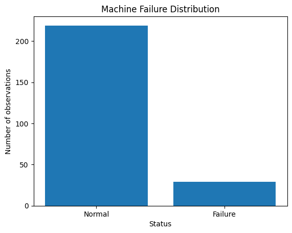
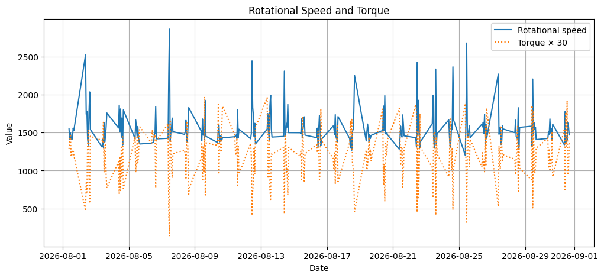

Statistical analysis of one month of machine operating data to establish normal operating limits and automatically detect abnormal conditions in temperature, rotational speed, and torque.
This project analyzes the operating data of an industrial machine collected during August 2026. The goal is to evaluate the machine's main operating parameters — temperature, rotational speed, and torque — and to identify abnormal conditions that may be associated with machine failures, using Pandas for data handling, NumPy for the statistical calculations, and Matplotlib for visualization.
Machine failures are often preceded by parameters drifting outside their normal operating range. Without a systematic way to define what "normal" looks like, abnormal readings are easy to miss until a failure has already occurred. This analysis builds reference operating limits directly from historical normal-operation data, then flags every measurement that exceeds them.
Compute the mean, maximum, and minimum for temperature, rotational speed, and torque.
Derive reference limits from measurements recorded during normal operation only.
Flag every measurement that exceeds its parameter's normal operating limit.
Plot each parameter's evolution over time against its operating limit.
CSV export of hourly machine readings
August 2026, hourly resolution
Temperature, rotational speed, torque, failure status
Pandas, NumPy, Matplotlib
Threshold limits derived from normal-operation data (Failure = 0)
Jupyter Notebook
Avg. Temperature
Avg. Rotational Speed
Avg. Torque
Total Alarms Detected
Full analysis pipeline, from raw CSV to alarm detection, exactly as run in the notebook.
This section analyzes the machine operating data collected during August 2026. The objective is to evaluate the main machine parameters and identify abnormal operating conditions that may be associated with machine failures.
The machine data is stored in a CSV file. The dataset is loaded into a Pandas DataFrame to facilitate data exploration and analysis.
df = pd.read_csv("Real_machine_data.csv") print(df)
Time Temperature Rotational speed Torque Failure 0 2026-08-01 09:00:00 35.5 1551 42.8 0 1 2026-08-01 10:00:00 35.6 1408 46.3 0 2 2026-08-01 11:00:00 35.4 1498 49.4 0 3 2026-08-01 12:00:00 35.5 1433 39.5 0 4 2026-08-01 13:00:00 35.6 1408 40.0 0 ... ... ... ... ... ... 1219 2026-12-31 12:00:00 35.0 1357 41.8 0 1220 2026-12-31 13:00:00 35.1 1577 29.4 0 1221 2026-12-31 14:00:00 35.2 1399 46.4 0 1222 2026-12-31 15:00:00 35.2 1399 59.0 0 1223 2026-12-31 16:00:00 35.2 1492 48.1 0 [1224 rows x 5 columns]
The Time column is converted to datetime format to allow chronological filtering.
For this analysis, only measurements collected during August 2026 are considered.
df["Time"] = pd.to_datetime(df["Time"]) mask = ( (df["Time"] >= "2026-08-01") & (df["Time"] < "2026-09-01") ) Time = df.loc[mask, "Time"] temperature = df.loc[mask, "Temperature"] R_speed = df.loc[mask, "Rotational speed"] torque = df.loc[mask, "Torque"] Failure = df.loc[mask, "Failure"]
The main statistical indicators are calculated for temperature, rotational speed, and torque.
For each parameter, the following values are determined:
These indicators provide an overview of the machine's operating conditions during the analyzed period.
mean_temp = round(np.mean(temperature), 1) mean_speed = round(np.mean(R_speed), 1) mean_torque = round(np.mean(torque), 1) max_temp = np.max(temperature) max_speed = np.max(R_speed) max_torque = np.max(torque) min_temp = np.min(temperature) min_speed = np.min(R_speed) min_torque = np.min(torque)
print("===== PRODUCTION REPORT =====") print("\nTemperature") print("Average:", mean_temp, "°C") print("Maximum:", max_temp, "°C") print("Minimum:", min_temp, "°C") print("\nRotation speed") print("Average:", mean_speed, "rpm") print("Maximum:", max_speed, "rpm") print("Minimum:", min_speed, "rpm") print("\nTorque") print("Average:", mean_torque, "Nm") print("Maximum:", max_torque, "Nm") print("Minimum:", min_torque, "Nm")
===== PRODUCTION REPORT ===== Temperature Average: 35.6 °C Maximum: 36.4 °C Minimum: 34.9 °C Rotation speed Average: 1566.6 rpm Maximum: 2861 rpm Minimum: 1200 rpm Torque Average: 39.9 Nm Maximum: 65.7 Nm Minimum: 4.6 Nm
To identify abnormal operating conditions, reference limits are determined from measurements corresponding to normal machine operation.
Only observations where Failure = 0 are considered.
The maximum observed value under normal operation is used as the reference limit for:
Values exceeding these limits are considered potential abnormal conditions.
normal_data = df.loc[ mask & (df["Failure"] == 0) ] limit_temp = normal_data["Temperature"].max() limit_speed = normal_data["Rotational speed"].max() limit_torque = normal_data["Torque"].max()
print("Normal operating limits:") print("Temperature:", limit_temp, "°C") print("Rotation speed:", limit_speed, "rpm") print("Torque:", limit_torque, "Nm")
Normal operating limits: Temperature: 36.4 °C Rotation speed: 2035 rpm Torque: 60.5 Nm
The previously calculated normal operating limits are used to detect measurements that exceed the expected operating range.
An alarm is generated when:
These alarms indicate potentially abnormal machine operating conditions.
high_temperature = df.loc[ mask & (df["Temperature"] > limit_temp) ] high_speed = df.loc[ mask & (df["Rotational speed"] > limit_speed) ] high_torque = df.loc[ mask & (df["Torque"] > limit_torque) ]
print("===== TEMPERATURE ALARMS =====") for index, row in high_temperature.iterrows(): print( row["Time"], "→", row["Temperature"], "°C" )
===== TEMPERATURE ALARMS =====
print("===== ROTATION SPEED ALARMS =====") for index, row in high_speed.iterrows(): print( row["Time"], "→", row["Rotational speed"], "rpm" )
===== ROTATION SPEED ALARMS ===== 2026-08-02 09:00:00 → 2521 rpm 2026-08-07 10:00:00 → 2261 rpm 2026-08-07 11:00:00 → 2861 rpm 2026-08-12 11:00:00 → 2442 rpm 2026-08-14 10:00:00 → 2308 rpm 2026-08-18 16:00:00 → 2253 rpm 2026-08-22 11:00:00 → 2425 rpm 2026-08-23 14:00:00 → 2335 rpm 2026-08-24 15:00:00 → 2365 rpm 2026-08-25 11:00:00 → 2678 rpm 2026-08-27 09:00:00 → 2269 rpm 2026-08-29 11:00:00 → 2204 rpm
print("===== TORQUE ALARMS =====") for index, row in high_torque.iterrows(): print( row["Time"], "→", row["Torque"], "Nm" )
===== TORQUE ALARMS ===== 2026-08-09 14:00:00 → 65.7 Nm 2026-08-10 10:00:00 → 63.0 Nm 2026-08-10 16:00:00 → 61.5 Nm 2026-08-13 09:00:00 → 65.3 Nm 2026-08-21 09:00:00 → 60.7 Nm 2026-08-22 09:00:00 → 62.3 Nm 2026-08-25 09:00:00 → 62.7 Nm 2026-08-26 16:00:00 → 60.7 Nm 2026-08-29 10:00:00 → 61.8 Nm 2026-08-31 13:00:00 → 63.9 Nm
The number of detected alarms is calculated for each machine parameter.
This provides an overview of which parameters exceeded their normal operating limits most frequently.
print("===== ALARM SUMMARY =====") print("Temperature alarms:", len(high_temperature)) print("Rotation speed alarms:", len(high_speed)) print("Torque alarms:", len(high_torque)) total_alarms = ( len(high_temperature) + len(high_speed) + len(high_torque) ) print("Total alarms:", total_alarms)
===== ALARM SUMMARY ===== Temperature alarms: 0 Rotation speed alarms: 12 Torque alarms: 10 Total alarms: 22
The machine observations are divided into two categories:
Failure = 0)Failure = 1)A bar chart is used to visualize the distribution of normal and failure states during August 2026.
failure = len(df.loc[mask & (df["Failure"] == 1)]) normal = len(df.loc[mask & (df["Failure"] == 0)]) plt.bar( ["Normal", "Failure"], [normal, failure] ) plt.title("Machine Failure Distribution") plt.xlabel("Status") plt.ylabel("Number of observations") plt.show()

The evolution of temperature, rotational speed, and torque is visualized over time.
The reference operating limit calculated from normal machine operation is displayed on each graph.
This visualization makes it possible to identify measurements that exceed the normal operating range.
fig, axes = plt.subplots(3, 1, figsize=(12, 10)) # Temperature axes[0].plot(Time, temperature) axes[0].set_title("Temperature") axes[0].axhline( limit_temp, linestyle="--", color="red", label="Normal operating limit" ) axes[0].set_xlabel("Date") axes[0].set_ylabel("Temperature (°C)") axes[0].legend() # Rotational speed axes[1].plot(Time, R_speed) axes[1].set_title("Rotational Speed") axes[1].axhline( limit_speed, linestyle="--", color="red", label="Normal operating limit" ) axes[1].set_xlabel("Date") axes[1].set_ylabel("Rotational speed (rpm)") axes[1].legend() # Torque axes[2].plot(Time, torque) axes[2].set_title("Torque") axes[2].axhline( limit_torque, linestyle="--", color="red", label="Normal operating limit" ) axes[2].set_xlabel("Date") axes[2].set_ylabel("Torque (Nm)") axes[2].legend() plt.tight_layout() plt.show()
The rotational speed and torque are plotted on the same graph to compare their evolution over time.
Because rotational speed and torque have different numerical scales, the torque values are multiplied by 30 for visualization purposes.
This scaling is used only for visualization and does not modify the original torque measurements.
plt.figure(figsize=(12, 5)) plt.plot( Time, R_speed, label="Rotational speed" ) plt.plot( Time, torque * 30, linestyle=":", label="Torque × 30" ) plt.xlabel("Date") plt.ylabel("Value") plt.title("Rotational Speed and Torque") plt.legend() plt.grid() plt.show()

The comparison between rotational speed and torque shows that both parameters vary significantly during the analyzed period. Rotational speed generally remains around 1,400–1,600 rpm, with several peaks exceeding 2,000 rpm — periods that may warrant further investigation.
Torque also presents significant variation throughout the month. The two parameters do not appear to have a strong direct relationship in this visualization: several high rotational-speed values occur when torque is relatively low, while some higher torque values occur at moderate rotational speeds. Rotational speed and torque should therefore be analyzed together with other machine parameters, such as temperature and failure status, to better identify abnormal operating conditions.
Normal-operation data was used to derive per-parameter alarm thresholds automatically.
12 rotational speed alarms and 10 torque alarms flagged across the month, with 0 temperature alarms.
Every alarm is timestamped, making it possible to trace each abnormal reading back to its exact moment.
The same notebook can be re-run on any new month of data to regenerate the production report.